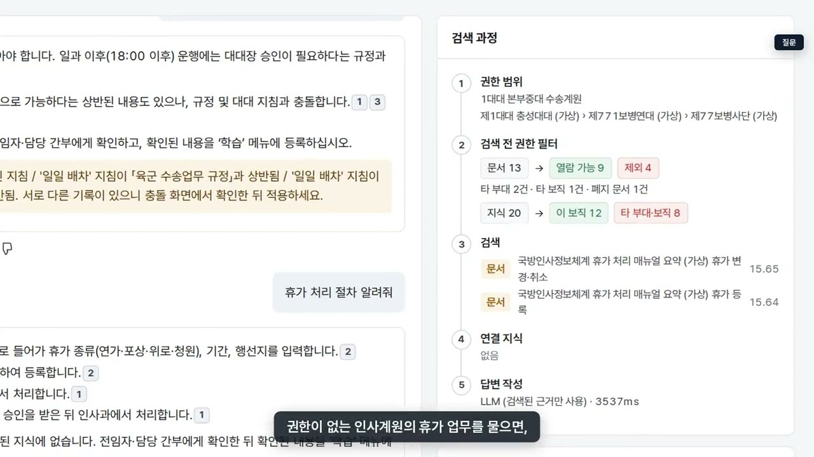
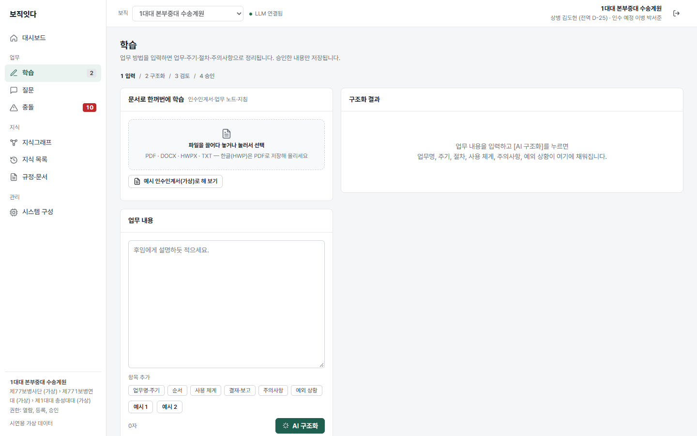
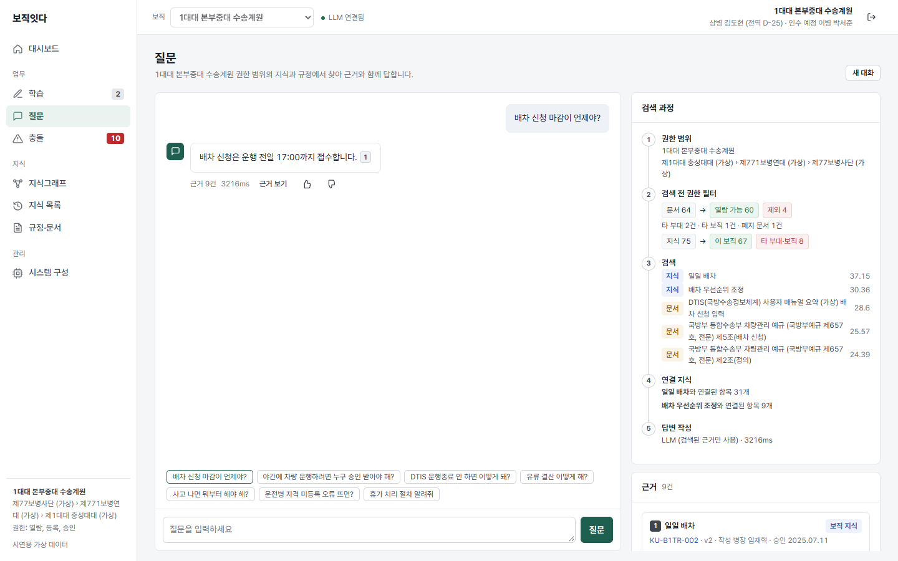
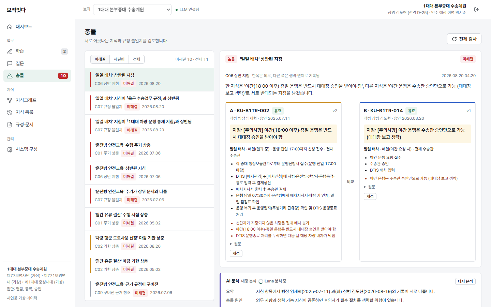
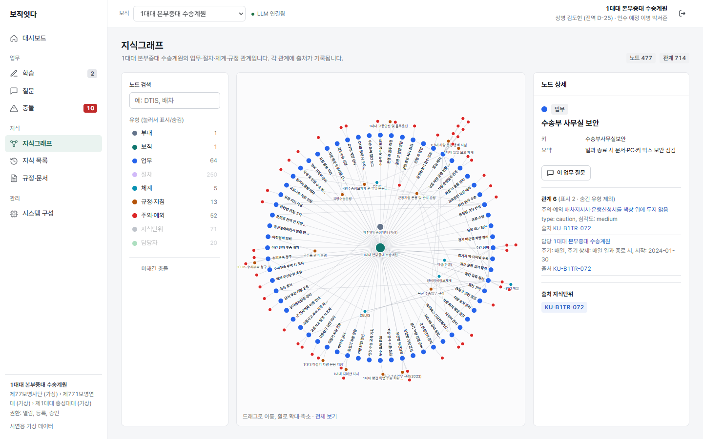

2026년 9월 · 육군 창업경진대회 · 현역 장병 5명 팀
군에서는 전역, 전출, 보직 변경으로 담당자가 계속 바뀐다. 병사는 길어야 십여 개월이면 자리를 넘겨야 하는데, 인수인계는 여전히 선임의 구두 설명과 두꺼운 문서에 기대고 있어서 누가 넘겨주느냐에 따라 품질이 크게 달라진다. 우리 팀 5명은 모두 현역 육군 장병이라 이 문제를 각자 겪어 봤다. 그래서 보직마다 AI를 하나씩 두고, 그 자리의 실무 절차와 전임자들이 남긴 노하우를 계속 쌓아서 다음 사람에게 넘겨주는 서비스를 만들기로 했다. 이름은 "보직잇다"로 정했다.
나는 제품 개발과 테스트, 시연 영상을 맡았다. 9월 28일 육군 창업경진대회에 서류를 제출했다.
시연 사이트 열기시연 영상 (YouTube)제출한 신청서 (개인정보 가림)

시연 사이트는 지금도 돌아간다. 부대, 인원, 규정은 전부 지어낸 가상 데이터라 로그인 버튼만 누르면 들어갈 수 있고, 입력한 내용은 그 브라우저에만 저장된다.
보직 계정으로 들어가면 그 보직의 지식 공간이 열린다. 시연에 쓴 가상 수송계원 보직에는 지금까지 거쳐 간 보직자 세 명이 남긴 유효 지식 67건(업무 63개)이 들어 있고, 곧 전역하는 현 보직자에게서 새로 전입한 후임에게 넘기는 상황으로 꾸몄다. 기능은 신청서에 적은 대로 학습, 질문, 충돌 세 가지가 중심이다.
현 보직자가 업무 방법을 말하듯이 적으면 AI가 업무명, 주기, 순서, 사용 체계, 결재·보고 라인, 주의사항, 예외 상황으로 나눈 초안을 만든다. 사람이 승인한 것만 저장되고, 누가 언제 무엇을 바꿨는지 이력이 남는다. 이미 있는 인수인계서는 PDF, DOCX, HWPX 파일을 통째로 올리면 제목 단위로 나눠 한꺼번에 구조화하고, 기존 지식과 겹치는지, 개정인지, 새 업무인지를 구분한다. 저장 전에 비밀번호나 개인 연락처는 가린다.

가장 신경 쓴 부분은 권한이다. 질문이 들어오면 검색하기 전에 이 사용자의 부대와 보직이 볼 수 없는 자료부터 걸러 낸다. 아래 예시에서는 문서 64개 중 다른 부대 자료 2건, 다른 보직 자료 1건, 폐지된 문서 1건이 검색 전에 빠졌다. 남은 지식과 규정에서 찾은 근거만 LLM에 넘겨 답을 쓰게 하고, 답에는 근거 번호를 붙인다. "배차 신청 마감이 언제야?"라고 물으면 3초쯤 뒤 "운행 전일 17:00까지"라고 답하고, 그 근거가 어느 전임자가 언제 승인한 지식인지까지 보여 준다.

전임자가 여러 명이면 같은 업무에 서로 다른 지시를 남기는 일이 생긴다. 충돌 화면은 전임자끼리 상반된 지침, 부대 지침과 상위 규정의 불일치, 수행 주기가 서로 다른 경우를 찾아 근거를 나란히 보여 주고, 사람이 어느 쪽을 남길지 정하게 한다. 그대로 두면 틀린 내용이 다음 사람에게 그대로 넘어가기 때문이다.

저장된 지식은 업무, 절차, 체계, 규정, 주의사항, 담당자 사이의 관계로 이어진다. 시연 보직 하나에 노드 477개, 관계 714개가 있고, 관계마다 어느 지식에서 나왔는지 출처가 붙어 있다. 질문할 때 한 업무와 연결된 절차와 규정까지 함께 찾을 수 있는 게 이 구조 덕분이다.

시연판은 상용 LLM API로 돌아간다. 실제로 도입하려면 군 자료가 밖으로 나가면 안 되니까, 같은 구조에서 LLM만 국방망 안의 내부 서버로 바꾸고 암호화, 접근통제, 감사 로그를 붙이는 방향으로 설계했다.
9월 초 팀에서 아이템을 정할 때, 말로만 설명하기보다 실제로 만들 수 있다는 걸 보여 주려고 하루 만에 첫 프로토타입을 만들어 공유했다. 지식이 트리로 정리되는 구조가 내가 생각한 모양과 달라서, 그 뒤로 학습, 질문, 충돌, 인수인계 퀴즈로 이어지는 기능 구성을 글로 다시 정리해 서비스 설명의 바탕으로 썼다. 제출 전후로 지금의 공개 시연판을 개발하고 직접 써 보며 고쳤고, 시연 영상을 찍었다. 개발에는 AI 코딩 도구를 함께 썼다.
기획하면서 가장 오래 고민한 건 "군 업무를 아는 AI"와 "내가 맡은 이 자리를 기억하는 AI"의 차이였다. 범용 AI는 온나라 사용법은 알려 줄 수 있어도, 우리 부대의 결재선이나 전임자가 남긴 주의사항은 모른다. 그래서 보직을 하나의 독립된 지식 단위로 두고, 권한과 출처와 충돌 검사를 처음부터 넣었다.
개인이 돈을 내는 서비스가 아니라 육군과 계약해 전 부대에 공급하는 B2G 방식으로 계획했다. 처음에는 인사·군수·작전·교육·수송 같은 행정 보직(약 3만 2천 명)에서 시작해, 정비·통신·보급 같은 전문 보직(약 8만~12만 명), 이후 인사이동이 잦은 공공기관과 기업으로 넓히는 순서다. 시제품 고도화와 2~4개월 시범 적용까지 초기 자금은 약 1,300만 원으로 잡았다.
대회에 제출한 신청서 전체(17쪽)를 PDF로 올려 두었다. 접수일시는 2026년 9월 28일 19시 39분이다. 팀원들의 이름, 군번, 연락처, 소속 부대 같은 개인정보는 검게 가렸다.
시연 사이트: inny0127.github.io/bojik-itda · 시연 영상: youtu.be/aRVANi0SAq4. 시연에 나오는 부대, 인원, 규정, 업무 내용은 모두 가상이다.